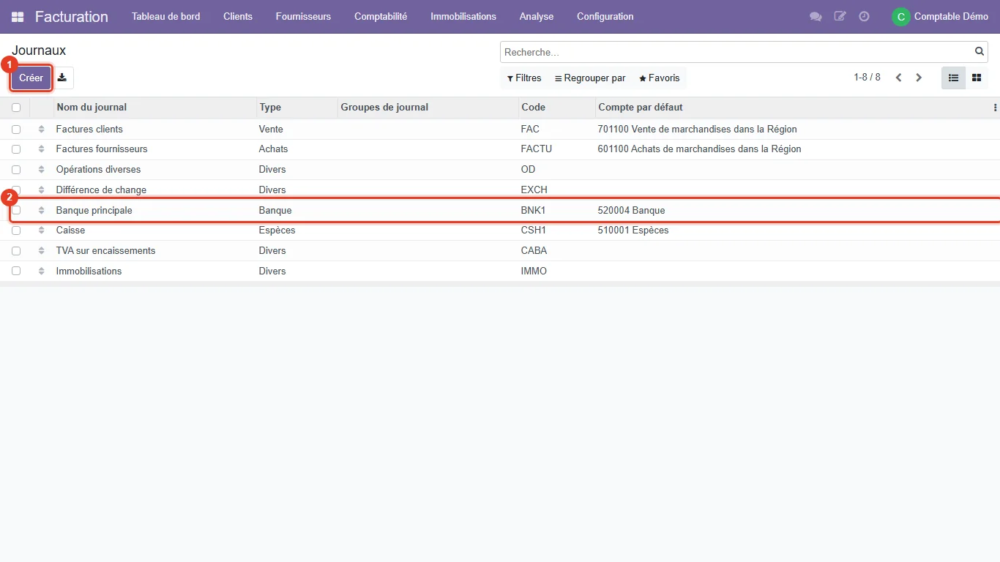

Objectif. Savoir dans quel journal chaque opération est enregistrée.
Où dans Odoo 15Facturation › Configuration › Comptabilité › Journaux

Ce que vous faites
- La liste montre chaque journal : nom, type, code et compte par défaut.
- Ventes et Achats reçoivent les factures ; Banque et Caisse les paiements ; Opérations diverses le reste.
- Le compte par défaut d'un journal de banque (2) est son compte 52.
À vérifier avant de continuer
0 / 2À éviter.
- Ne saisissez pas un paiement dans le journal des opérations diverses.
Exercice sur la base de test
Notez le code et le compte de chaque journal de trésorerie.